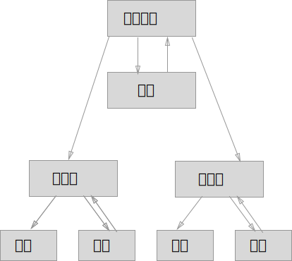
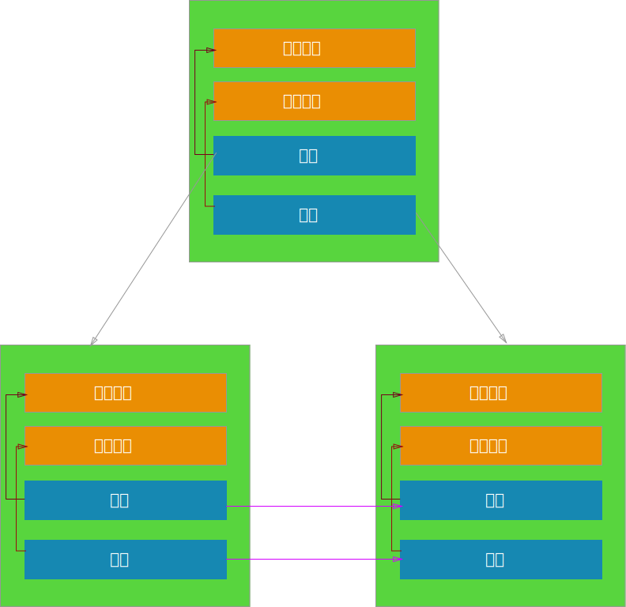
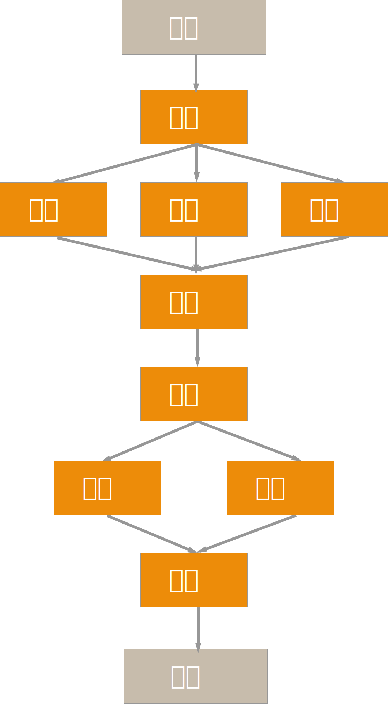

Haskell与函数式编程
面向过程编程思想
面向对象编程思想
函数式编程思想
What's the difference
- 没有变量，只有常量
- 没有传统意义上的逻辑判断
- 没有循环
- 没有子程序，只有函数
- 函数是”一等公民”，每个函数都是一个值，有其类型，能作为其他函数的参数
- 惰性求值
- 静态强类型
IntIntegerFloatDoubleCharBool
函数调用
-- 假设有函数f
f x -- 这就是计算f(x)了
g x y -- g(x,y)
运算符
+-*/not<>==/=mod
列表
自定义函数
递归
想要理解递归，你要先理解递归。
curry化函数
Hindley-Milner类型签名
length :: Floating a => (a -> (a -> (a)))高阶函数
EqOrdShowReadEnumBoundedNumFloatingIntegeral
instance Functor [] where
fmap = map
instance Functor Maybe where
fmap func (Just x) = Just (func x)
fmap func Nothing = Nothing
instance Applicative Maybe where
pure = Just
Nothing <*> _ = Nothing
(Just func) <*> something =
fmap func somethinginstance Monad Maybe where
return :: a -> Maybe a
(>>=) :: Maybe a -> (a -> Maybe b)
-> Maybe b- “可变的”、“副作用”是不好的
- 数据>>函数>>函数>>函数 = 程序的结果
MVVM
- “领域层” —— VM层
- render函数——由MVVM框架负责提供。
- 用户行为——是指用户修改了VM层的数据
Flux
- "领域层"——Store
- render函数——自己提供
- Action——就是Action

Flux
- "领域层"——Store
- render函数——自己提供
- Action——就是Action
Redux
- 单一的Store
(state, action) => state
推荐书目和网页
- 《Haskell趣学指南》
- 《SICP》
- Functor、Applicative 和 Monad
- Flux 架构入门教程